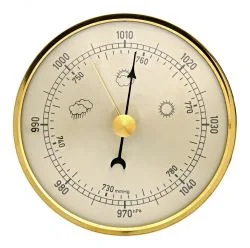
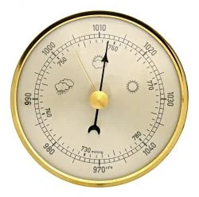
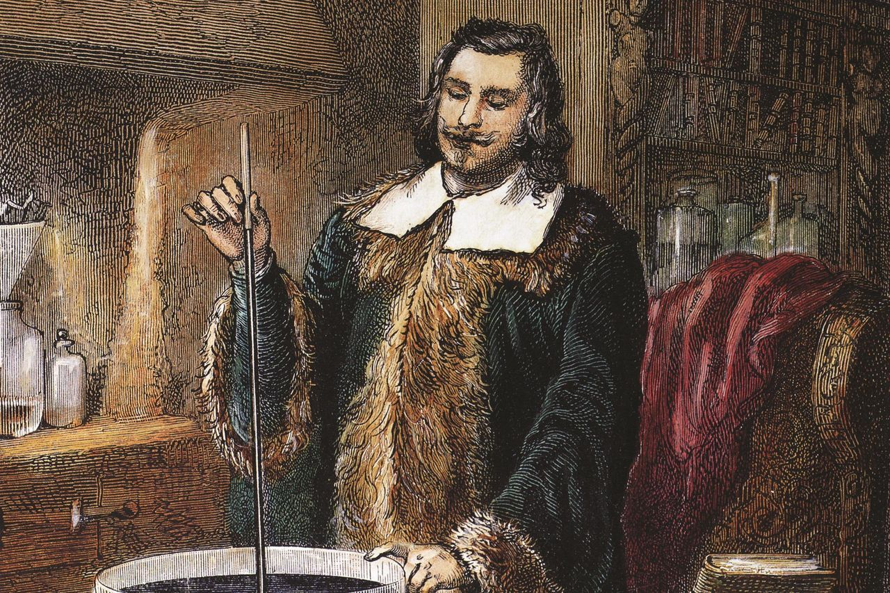
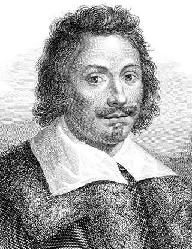

¿Qué es un barómetro?
Un barómetro es un instrumento de medición que mide la presión atmosférica. La presión atmosférica es el peso por unidad de superficie ejercida por la atmósfera. Uno de los barómetros más conocidos son los de mercurio.
Un barómetro es un instrumento de medición que mide la presión atmosférica. La presión atmosférica es el peso por unidad de superficie ejercida por la atmósfera. Uno de los barómetros más conocidos son los de mercurio.
Los primeros barómetros fueron construidos por el matemático y físico italiano Evangelista Torricelli en el siglo xvii. La presión atmosférica equivale a la altura de una columna de agua de unos 10,3 m de altura. En los barómetros de mercurio, cuya densidad es unas 14 veces mayor que la del agua, la columna de mercurio sostenida por la presión atmosférica al nivel del mar es de unos 76 cm.2 Luego del descubrimiento del barómetro, Torricelli dijo:2 Vivimos en el fondo de un océano del elemento aire, el cual, mediante una experiencia incuestionable, se demuestra que tiene peso. Torricelli Tradicionalmente se pensaba (sobre todo los aristotélicos) que el aire no tenía peso: es decir, que los kilómetros de aire sobre la superficie no ejercían ningún peso sobre los cuerpos que se encontraban debajo. Incluso Galileo había aceptado la ingravidez del aire como una simple verdad. Torricelli cuestionó esa suposición y, en su lugar, propuso que el aire tenía peso y que era este (y no la fuerza de atracción del vacío) el que sostenía (o, mejor dicho, empujaba) hacia arriba la columna de agua. Pensó que el nivel al que se mantenía el agua (unos 10,3 m) reflejaba la fuerza del peso del aire que empujaba sobre ella (en concreto, que empujaba sobre el agua de la pila y, por tanto, limitaba la cantidad de agua que podía caer desde el tubo hasta ella). Consideraba que el barómetro era una balanza, un instrumento de medida (en lugar de un mero instrumento para crear el vacío), y como fue el primero en verlo así, tradicionalmente se le considera el inventor del barómetro (en el sentido en que hoy utilizamos el término).3 Debido a los rumores que circulaban en el chismoso barrio italiano de Torricelli, entre los que se incluía que se dedicaba a algún tipo de brujería o hechicería, Torricelli se dio cuenta de que tenía que mantener su experimento en secreto para evitar el riesgo de ser arrestado. Necesitaba utilizar un líquido más pesado que el agua, y de su asociación previa y de las sugerencias de Galileo dedujo que utilizando mercurio se podría utilizar un tubo más corto. Con el mercurio, que es unas 14 veces más denso que el agua, y por tanto solo se necesitaba un tubo de 80 cm, y no de 10,5 m.4 En 1646, Blaise Pascal, junto con el ingeniero Pierre Petit, repitió y perfeccionó el experimento de Torricelli tras oír hablar de él a Marin Mersenne, a quien Torricelli había mostrado el experimento a finales de 1644. Pascal ideó además un experimento para probar la proposición aristotélica de que eran los vapores del líquido los que llenaban el espacio de un barómetro. Su experimento comparaba el agua con el vino, y como este último se consideraba más "espirituoso", los aristotélicos esperaban que el vino se mantuviera más bajo (ya que más vapores significarían más empuje hacia abajo en la columna de líquido). Pascal realizó el experimento públicamente, invitando a los aristotélicos a predecir de antemano el resultado. Los aristotélicos predijeron que el vino se mantendría más bajo. No fue así.3 Sin embargo, Pascal fue aún más lejos para probar la teoría mecánica. Si, como sospechaban filósofos mecánicos como Torricelli y Pascal, el aire tenía peso, la presión sería menor a mayor altura. Por ello, Pascal escribió a su cuñado, Florin Perier, que vivía en el Puy de Dôme, pidiéndole que realizara un experimento crucial. Perier debía subir el Puy de Dôme con un barómetro y medir durante el trayecto la altura de la columna de mercurio. Luego debía compararla con las medidas tomadas al pie de la montaña para comprobar si las medidas tomadas más arriba eran en realidad más pequeñas. En septiembre de 1648, Perier llevó a cabo el experimento de forma cuidadosa y meticulosa, y comprobó que las predicciones de Pascal eran correctas. La columna de mercurio se mantenía más baja a medida que se llevaba el barómetro a mayor altura.3
 
...